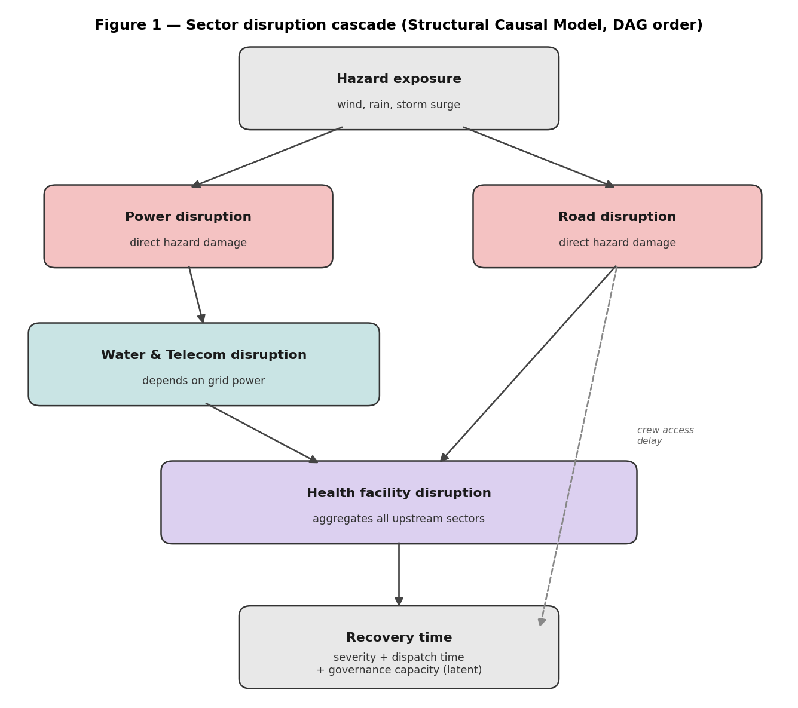
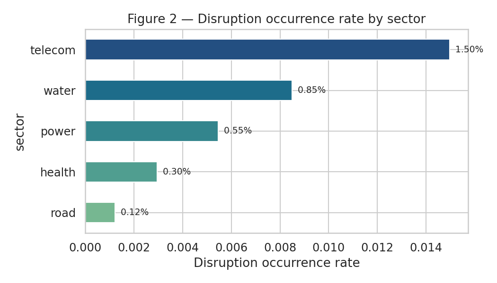
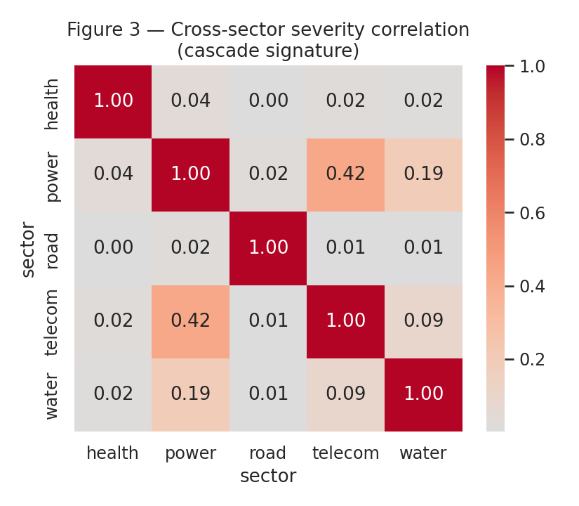
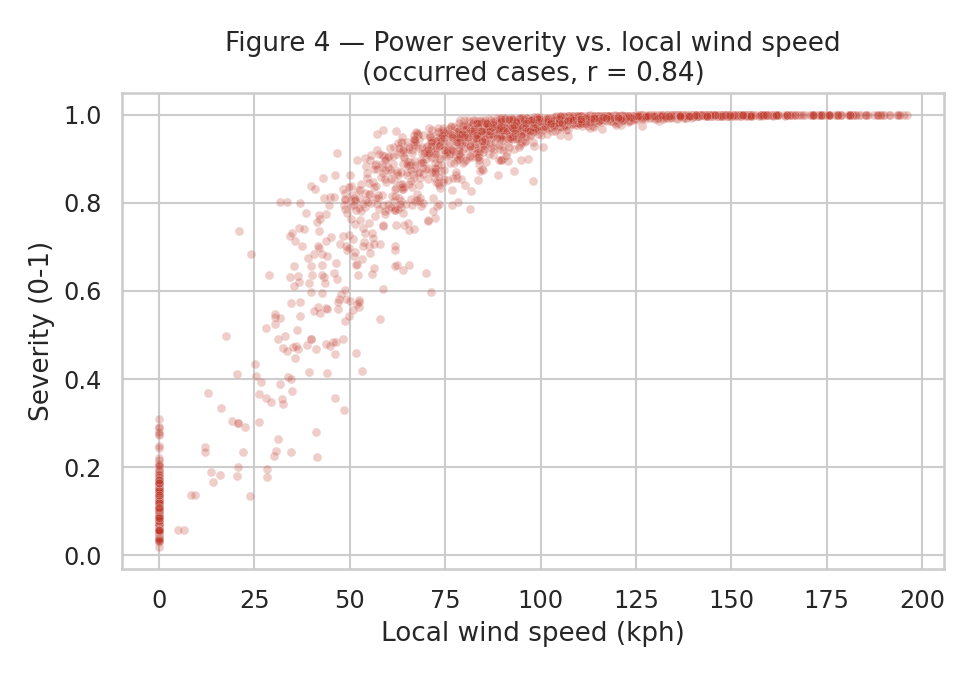
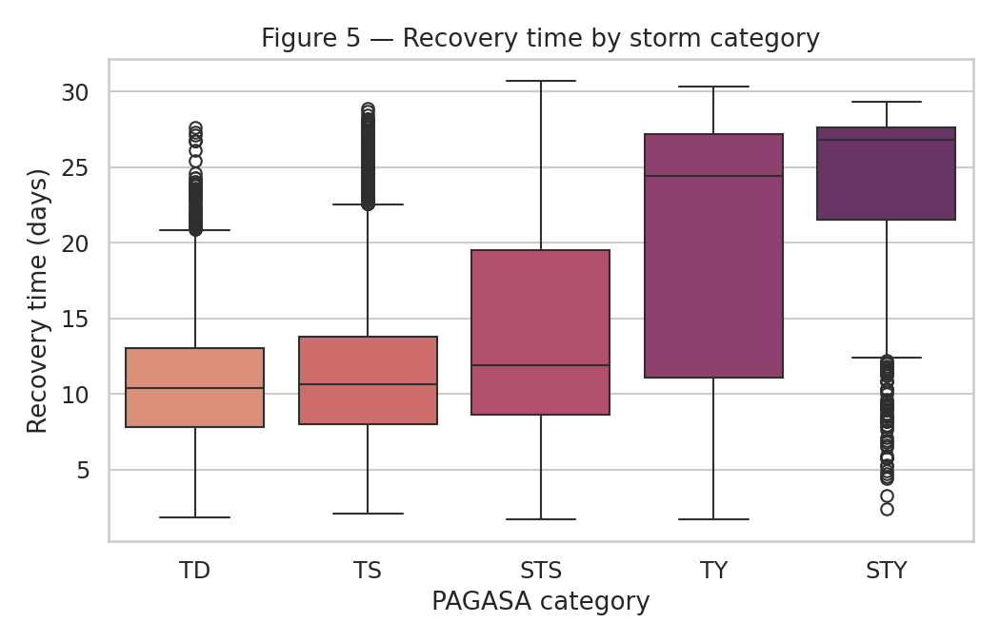
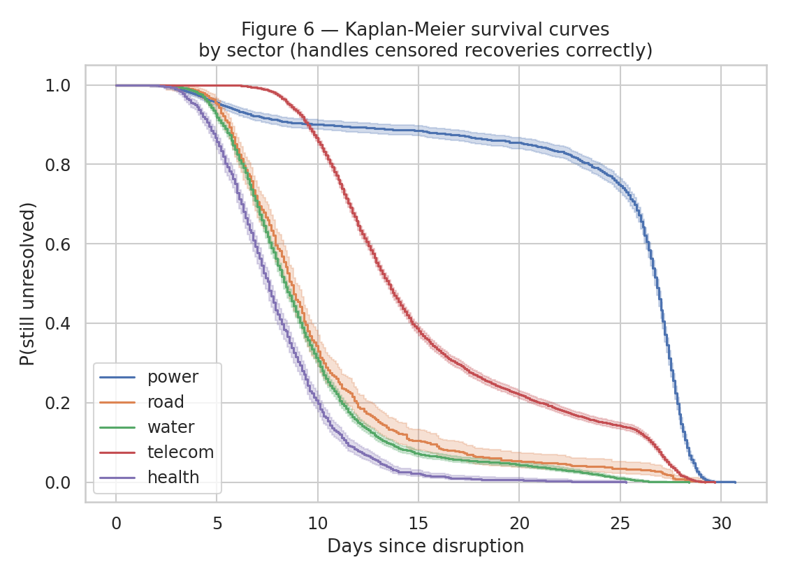

A short introduction to the project and the path that led to it.
Resilience planners in the Philippines need to reason about two linked questions after a typhoon: whether a given piece of infrastructure will fail, and how long it will take to come back online. Data at the granularity needed to study this, area by area, sector by sector, event by event, is not publicly available, so this project builds a synthetic substitute from first principles rather than from an existing dataset.
The approach is a hierarchical structural causal model. Typhoon events are generated first, then intersected with anonymised municipality profiles to produce hazard exposure that is spatially sparse in the way real storms are, since any given typhoon only ever touches a fraction of the country. That exposure then drives a five sector disruption cascade, power and roads failing directly from wind and flooding, water and telecommunications failing partly because power already has, and health facilities absorbing the consequences of all four. A hidden variable representing local institutional capacity runs beneath the whole model, shaping infrastructure condition and recovery speed without ever appearing in the data itself, which produces the kind of confounding a real analyst would actually have to contend with.
Several parts of the design are anchored in published literature rather than chosen freely: the wind categories follow PAGASA's own thresholds, the relationship between wind speed and pressure follows Atkinson and Holliday's 1977 formulation for the western Pacific, and the point at which floodwater makes a road impassable follows Pregnolato and colleagues' 2017 depth threshold. The generator was then tested against its own output rather than assumed correct once it ran without errors, which surfaced three genuine defects along the way. Each is documented below with what went wrong, why, and how the fix was verified, since that process is as much a part of the result as the final dataset is.
At least sixty per cent of the Philippines' land area is exposed to multiple hazards, and nearly three quarters of its population lives with some exposure to them. Average annual losses from typhoons alone have been estimated at over one hundred billion pesos. Those figures, on their own, motivate the modelling problem, but they understate something the Asian Development Bank's own evaluation of the country's disaster resilience programme makes explicit: a meaningful share of that risk sits not in the hazards themselves but in institutional capacity, in how well local governments plan for, finance, and respond to disasters once they happen.
That distinction, between the hazard and the capacity to respond to it, is the single idea the entire causal structure of this project is built around. A resilience planner does not only need to know that a typhoon is coming. They need to know which municipalities are likely to lose which services, for roughly how long, and whether that duration is being driven by the storm or by something slower and more structural underneath it. No public dataset currently supports that kind of reasoning at the resolution this requires, which is the gap this project sits in.
The dataset is organised around four related tables, generated at a scale of fifteen hundred synthetic municipalities and three hundred typhoon events, producing just over two million rows in the final disruption table. Municipalities are represented as anonymised archetypes rather than named local government units: coastal and frequently struck, coastal and less exposed, inland floodplain, mountainous, and urban. This was a deliberate choice. Naming real municipalities would imply that the values attached to them correspond to something true about that specific place, which they do not; anonymised archetypes let the dataset carry realistic statistical texture without making a claim about any particular municipality that the model cannot actually support.
[FIGURE PLACEHOLDER: Schema diagram]
A simple boxes-and-arrows diagram showing the four tables and how they join: typhoon_events, areas, hazard_exposure, sector_disruption.

The model is built as what is properly called a structural causal model rather than a structural equation model, a distinction that matters more than it might first appear. Structural equation modelling is an analysis technique, a way of fitting a model to data that already exists. What this project needed instead was a way of generating data that did not exist yet, following an explicit causal order rather than being fitted to anything, which is precisely what a structural causal model is designed to do.
Generation proceeds in five stages. Municipality profiles are drawn first, including a hidden variable representing local governance capacity. Typhoon events are generated next, with wind speed as the root driver and pressure, category and storm surge potential derived from it rather than sampled independently. Hazard exposure follows, and is deliberately sparse: each typhoon is given a landfall region and a track radius, and only municipalities that fall within that radius are exposed at all, which means most municipality and event pairings see no hazard whatsoever, exactly as would be true of any real storm. The disruption cascade comes fourth, generated in a strict dependency order rather than sector by sector independently, since that independence would have been the easier choice and the less honest one. Power and road disruption respond directly to wind, rainfall, flood depth and landslide risk. Water and telecommunications respond to those same hazards but also to how badly power has already failed, since pumping stations and cell towers both depend on grid electricity or a battery that eventually runs out. Health facility disruption sits at the bottom of the cascade, shaped by everything above it. Recovery generation follows last, where dispatch time and recovery time are made conditional on how severe the disruption actually was, rather than on the hazard directly, and where a small but genuine share of recoveries are still unresolved at the point the data is notionally extracted, producing real censored observations rather than data that always resolves neatly.
One choice worth explaining on its own is why each sector reads its own raw hazard variables directly, rather than a single combined severity score. An earlier version of this design used exactly such a combined index, and it was the wrong call: collapsing wind, rainfall, flood depth and storm surge into one number discards precisely the information a model trained on this data would need in order to learn that telecommunications care about wind in a way that water does not, and that water cares about flood depth in a way that telecommunications do not. The combined index still exists in the analysis notebook, but only as something computed after the fact for a single summary view, never as something the generator itself depends on.
The first working version of the generator held the entire municipality by event combination in memory at once. At a modest scale this was fine. At a more realistic scale, several thousand municipalities against eight hundred events, it reliably exhausted memory and was killed by the operating system rather than failing gracefully. That failure was not an edge case worth footnoting; it directly contradicted the requirement that a generator like this needs to scale toward millions of rows, and it needed a real fix rather than a caveat in the documentation.
The fix was to generate events in batches, writing each batch's results directly to disk rather than accumulating everything in memory before writing anything at all. Peak memory now depends on the batch size chosen rather than on the size of the dataset as a whole, which is the difference between a generator that merely worked once at a small scale and one that actually does what it claims to.
Not every parameter in a model like this can be pulled from a published source, and pretending otherwise would be worse than simply saying so. Parameters here are treated in two tiers. The wind categories, the wind-pressure relationship, and the flood depth at which a road becomes impassable are all taken directly from published sources and cited as such. Everything else, the resilience indices, the exact strength of each causal relationship, was calibrated by hand against a checklist of properties the output needed to satisfy: that severe storms cause more disruption than weak ones, that coastal municipalities are hit harder than inland ones, that power failures correlate with water and telecommunications failures rather than sitting independently of them, and so on. All of these hold in the final exported data, not merely in the design intention behind it.
The strongest single piece of evidence that the model behaves as intended came from treating it as something to be recovered rather than something to be trusted. A logistic regression fitted only on the columns that actually appear in the exported dataset, without access to the hidden governance variable, recovered the generator's true wind coefficient to three significant figures, and separated occurrence from non-occurrence with an area under the curve of 0.943. That a model with no privileged access to the generating process can recover it this cleanly is a more convincing form of validation than any single acceptance check on its own.
Three genuine defects were found by treating the generator's own output with suspicion rather than assuming that code which runs without errors is therefore correct.
The first was a case of severity being quietly conflated with rarity. An early version computed how bad a disruption was using the same score that determined whether it happened at all, which meant that any disruption rare enough to occur only barely was also, by construction, scored as only barely severe. Health facility disruption in particular was averaging a severity of roughly three thousandths on a scale of zero to one, which does not describe a real phenomenon. The fix separated the question of how rare an event is from the question of how bad it is once it happens, using two different baseline terms rather than one shared between them. The regression result mentioned above, recovering the true coefficient to three decimal places, is the confirmation that the fix actually worked rather than merely looking different.
The second was a censoring mechanism that existed in principle but almost never triggered in practice. Events were originally spread across an eleven year window with a single fixed snapshot date at the end, which meant that only a vanishingly small fraction of storms fell close enough to that date for a still open recovery to be possible at all. The fix narrowed the window so that a modest but genuine share of records, under two per cent depending on sector, are now properly censored, enough to make the survival analysis in the accompanying notebook meaningful without inflating the rate artificially.
The third was the memory failure already described in the previous section, and a smaller, more personally instructive fourth issue following directly from fixing it: during the process of regenerating data at a larger scale, the four exported tables were briefly left out of step with one another, one table reflecting the new scale, another still holding results from an earlier run. This produced a regression with the wrong signed coefficients and an accuracy worse than chance, which could easily have been read as a modelling failure. It was not; it was a pipeline consistency issue, found by asking why the result looked wrong rather than by assuming the model itself was broken. Regenerating everything from a single clean run resolved it, and the corrected regression result above is drawn from that clean run.





Telecommunications fails most often of the five sectors, water and power somewhat less so, and roads least often of all, though roads that do fail tend to stay failed for a comparatively long time once they do. The cascade is visible in the correlations rather than merely asserted in the design: power severity correlates with water severity at 0.19 and with telecommunications severity at 0.42, both of which follow directly from water and telecommunications depending partly on power in the underlying equations, not from anything added afterward to make the correlations appear. Power itself stands out sharply in recovery time, with a median recovery of nearly twenty seven days against roughly a week to two weeks for every other sector, which tracks real reporting on Philippine power restoration after major typhoons, where minor faults resolve in hours but significant transmission damage has taken the better part of a month.
Power severity sits concentrated near the top of its possible range, since power only fails at wind speeds high enough to make failure plausible in the first place, which leaves the model less room than it should have to distinguish a moderate outage from a severe one. The calibrated parameters, everything outside the four literature anchored relationships, were tuned to satisfy a checklist of expected behaviours rather than fitted against real incident records, since none were available for this purpose; their direction is well supported, their exact magnitude should be read as illustrative. The dataset as delivered sits at a moderate scale rather than the upper end the design allows for, chosen because it was the largest that ran reliably in the development environment rather than because it represents a ceiling on what the generator can do.
Three extensions were identified during design and deliberately set aside rather than built, each for a stated reason rather than simply left for later. Temporal carryover, allowing damage from one storm to still be unresolved when the next arrives, was deferred to keep the first version of the model simple enough to debug with confidence before adding anything stateful. A second hidden variable representing financial resilience, separate from general governance capacity, is motivated directly by the Asian Development Bank's own finding that local governments' uptake of disaster insurance stalled specifically over an inability to pay premiums, a financing problem distinct from a governance one, and is a natural next addition. A multi hazard extension, bringing earthquake risk into the same municipality archetypes, would widen the scope beyond the typhoon and flood slice this version deliberately confines itself to.
This project draws on published research from PAGASA, from Atkinson and Holliday's 1977 work on the wind-pressure relationship, from Pregnolato and colleagues' 2017 study of flood depth and road impassability, and from the Asian Development Bank's evaluation of the Philippines' Disaster Resilience Improvement Programme, cited throughout the specification document linked above.
@misc{[surname]2026disasterresilience,
title = {Modelling Infrastructure Disruption and Recovery
After Philippine Typhoons: A Synthetic Data Approach},
author = {[Your Name]},
year = {2026},
note = {Eskwelabs Data Modelling Internship}
}